Grundsätzlich werden drei verschiedene Gehörschutzarten unterschieden:
Die Liste „Alle dem IFA gemeldeten Gehörschützer mit EG-Baumusterprüfbescheinigung“ findet sich in der Regel „Benutzung von Gehörschutz“ (BGR/GUV-R 194).
Man unterscheidet
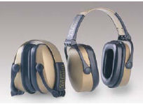
Abb. 3 Kapselgehörschützer mit Kopfbügel
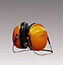
Abb. 4 Kapselgehörschützer mit Nackenbügel
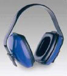
Abb. 5 Kapselgehörschützer mit Universalbügel Kann mit Bügel auf dem Kopf, unter dem Kinn oder im Nacken benutzt werden.
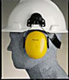
Abb. 6 Kapselgehörschützer, die nur an einem dazu passenden Arbeitsschutzhelm montiert werden dürfen.
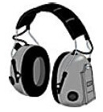
Abb. 7 Kapselgehörschützer mit pegelabhängiger Schalldämmung Laute Geräusche werden gedämmt. Leise Geräusche können elektronisch verstärkt werden, wobei die Sprachverständigung verbessert werden kann.
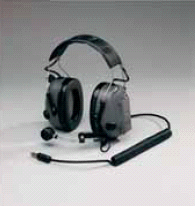
Abb. 8 Kapselgehörschützer mit Kommunikationseinrichtung Es gibt Gehörschützer zur Verständigung, z.B. über Sprechfunk.
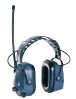
Abb. 9 Kapselgehörschützer mit eingebautem Radiogerät Es werden nur Gehörschützer mit Pegelbegrenzung angeboten.
Man unterscheidet Gehörschutzstöpsel zum einmaligen Gebrauch und Gehörschutzstöpsel zum mehrmaligen Gebrauch (wieder verwendbare Gehörschutzstöpsel).*
Beispiele |
||
| fertig geformte | vor Gebrauch zu formende | |
| Gehörschutzstöpsel zum mehrmaligen Gebrauch | 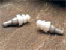 |
|
| Gehörschutzstöpsel zum einmaligen Gebrauch | 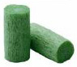 |
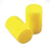 |
| Bügelstöpsel | 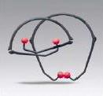 |
|
| Stöpsel mit Verbindungsschnur | 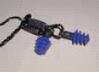 |
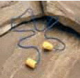 |
Otoplastiken sind im Ohr getragene Gehörschützer, die für den einzelnen Gehörgang individuell angefertigt werden.
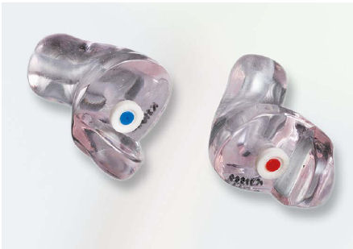
Abb. 10 Otoplastiken